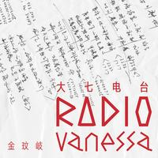

-
-
3401告白
温柔如风的歌声
-

丁芙妮Stephanie
丁芙妮的个人电台
-

科特Kurt
美国高颜值音乐制作人翻唱作品
-

音频怪物
著名动漫音乐人
-
-
-
极简主义
听，极简主义放慢你的生活
-
《二刘之辈》
由歌手刘思涵主持的微电台
-
陈楚生电台
陈楚生个人音乐分享类节目
-

大七电台-大七的朋友圈
金玟岐和你聊生活聊音乐
-
-
-
约谈人参
带你进入萌萌的鬼畜坑
-
菊花花的晚安音声
声优菊花花让你颅内高潮
-
晚安、好梦【女友电台】
七七化身为女友
-
南征小姐的音声小馆
南征小姐的多种口味音声伴你入梦
-
-
-
《万万没想到》
《万万没想到》官方电台
-
《微微一笑很倾城》
大神与系花的甜蜜网游爱情故事
-
奇幻剧《长青路93号》
超前的广播剧作品
-
翼之声节目&访谈
夭寿啊，太逗啦！
-
-
-
TIKTOK左右戏曲台
中国戏曲的基础讲解
-
单田芳评书
著名评书表演艺术大师
-
马三立相声
独具特色的“马氏相声”
-
能不忆江南
弹词开篇欣赏
-
-
-
加州101电台
全方位满足你的好奇心
-

围炉夜话
食物背后不为人知的故事
-
万历十五年
当代国人经典之作
-
政见｜政记干货大排档
拆掉知识的高墙
-